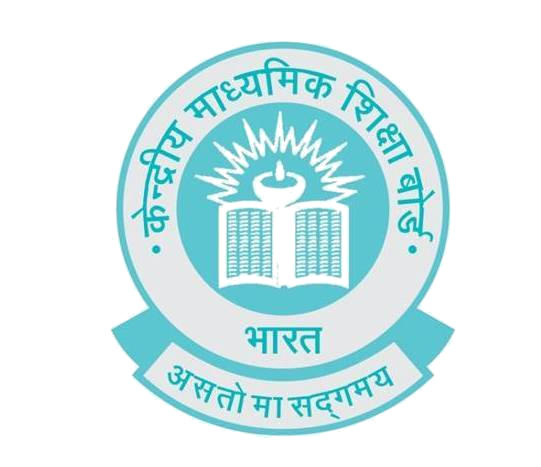

Central Board of Secondary Education
Historical Bacground
A trail of developments mark the significant changes that took place over the years in shaping up the Board to its present status. U P Board of High School and Intermediate Education was the first Board set up in 1921. It has under its jurisdiction Rajputana, Central India and Gwalior. In response to the representation made by the Government of United Provinces, the then Government of India suggested to set up a joint Board in 1929 for all the areas which was named as the 'Board of High School and Intermediate Education, Rajputana'. This included Ajmer, Merwara, Central India and Gwalior.
The Board witnessed rapid growth and expansion at the level of Secondary education resulting in improved quality and standard of education in institutions. But with the advent of State Universities and State Boards in various parts of the country the jurisdiction of the Board was confined only to Ajmer, Bhopal and Vindhya Pradesh later. As a result of this, in 1952, the constitution of the Board was amended wherein its jurisdiction was extended to part-C and Part-D territories and the Board was given its present name 'Central Board of Secondary Education'. It was in the year 1962 finally that the Board was reconstituted. The main objectives were to serve the educational institutions more effectively, to be responsive to the educational needs of those students whose parents were employed in the Central Government and had frequently transferable jobs.
Jurisdiction
The jurisdiction of the Board is extensive and stretches beyond the national geographical boundaries. As a result of the reconstitution, the erstwhile 'Delhi Board of Secondary Education' was merged with the Central Board and thus all the educational institutions recognized by the Delhi Board also became a part of the Central Board. Subsequently, all the schools located in the Union Territory of Chandigarh. Andaman and Nicobar Island, Arunachal Pradesh, the state of Sikkim , and now Jharkhand, Uttaranchal and Chhattisgarh have also got affiliation with the Board. From 309 schools in 1962, the Board as on 26.07.2017 has 19316 schools in India and 211 schools in 25 foreign countries. There are 1118 Kendriya Vidyalayas, 2734 Government/Aided Schools, 14860 Independent Schools, 590 Jawahar Novodaya Vidyalayas and 14 Central Tibetan Schools.
Decentralisation
In order to execute its functions effectively, Regional Offices have been set up by the Board in different parts of the country to be more responsive to the affiliated schools. The Board has regional offices in Allahabad, Ajmer, Bhubaneshwar, Chennai, Dehradun, Delhi, Guwahati, Panchkula, Patna and Trivanthapurm. Schools located outside India are looked after by regional office Delhi. The headquarter constantly monitors the activities of the Regional Offices. Although, sufficient powers have been vested with the Regional Offices, issues involving policy matters are, however, referred to the head office. Matters pertaining to day-to-day administration, liaison with schools, pre and post examination arrangements are all dealt with by the respective regional offices.
Main objectives of CBSE are
The prime focus of the Board is on